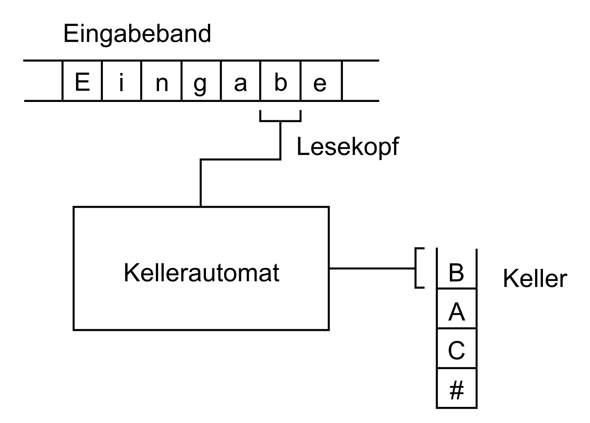

Automaten
- Left/Right Arrow Key - Move Slides
- Up/Down Arrow Key - Extra Slides
- O - Overview
Wiederholung
- Alphabet: Menge an Zeichen
- Wort: Endliche Zeichenfolge aus einem Alphabet
- Sprache: Menge an Wörtern über ein Alphabet
Was ist ein Automat?
- Befindet sich immer in genau einem Zustand
- Liest Zeichen ein und ändert Zustand
Arten von Automaten
- Nichtdeterministisch oder Deterministisch
- Transitionssysteme
- Akzeptoren
- Transduktoren
Deterministischer Endlicher Automat (DEA)
- Zustände (endliche Menge an Zuständen) Q
- Eingabealphabet; Σ = { a, b }
- Übergangsfunktion
- Startzustand (Element von Q)
- Nichtleere Teilmenge von Q der akzeptierenden Endzustände
Darstellung als Graph


?
Chomsky Hierarchie

Chomsky-Schützenberger-Hierarchie
- Noam Chomsky (Amerikanischer Sprachwissenschaftler)
- Marcel Schützenberger (Französischer Mathematiker)
- Klassifizierung von "Grammatiken"
- Grammatiken -> Regeln um Sprachen zu Erzeugen
- Klassifiziert damit auch Sprachen
- Typ 0-3
- Typ 0 ist allgemeiner -> Jede Typ 3 Sprache ist auch Typ 0, 1 und 2 usw.
- Einordnung von "Mächtigkeit" von Automaten oder Grammatiken
Typ 0 - Unbeschränkte Grammatiken
Beliebige GrammatikSemi-entscheidbare Sprachen
Es gibt eine Turingmaschine, die Wörter der Sprache akzeptiertz. B. Halteproblem
Auch "Rekursiv Aufzählbare Sprachen"
-> "Es gibt einen Algorithmus, der die Sprache als Ergebnissmenge hat"
Typ 1 - Kontextsensitiven Grammatiken
Wird von nichtdeterministischen Linear beschränkten Automaten akzeptiertTuringmaschine, deren Band nur so groß wie die Eingabe ist
Unklar ob auch deterministisch
Typ 2 - Kontextfreie Grammatiken
Nichtdeterministischer KellerautomatDeterministischer Kellerautomat reicht nicht
Kellerautomat

- Hat einen Stack (Keller) als "Zwischenspeicher"
- Keine Turingmaschine - Kopf bewegt sich nicht nach links und schreibt nicht
- Kopf darf auch ε einlesen
{vvR | v ∈ Σ* }
Typ 3 - Reguläre Grammatiken
Endliche AutomatenEgal ob deterministisch oder nichtdeterministisch
Reguläre Ausdrücke (eingeschränkte Variante des bekannten regex)
Quellen
- https://www.mathematik.uni-marburg.de/~thormae/lectures/ti1/ti_7_4_ger_web.html#1
- https://info-wsf.de/akzeptor/
- https://homepages.thm.de/~hg51/Veranstaltungen/VS-13/Folien/vs-03.pdf
- https://hpi.de/friedrich/teaching/units/endliche-automaten.html
- https://formal.kastel.kit.edu/teaching/FormSysWS0910/22EndlicheAutomaten.pdf
- https://www2.informatik.hu-berlin.de/logik/lehre/fm-lehre/ss12/th-inf-2/Kapitel-ChomskyHierarchie-Handout.pdf